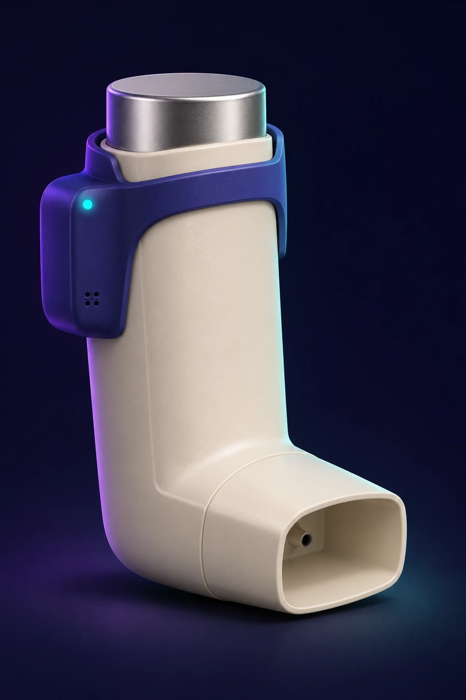

Đầu gắn giúp tập bấm thuốc đúng lúc hít
Hơi Thở.
Với bình xịt định liều, thuốc chỉ vào sâu trong phổi khi được bấm ngay sau lúc bắt đầu hít. Hơi Thở đặt hai thao tác lên cùng một trục thời gian để người bệnh và nhân viên y tế thấy ngay lệch ở đâu và sửa trong buổi hướng dẫn.
- 45%lượt dùng bình xịt mắc lỗi phối hợp bấm–hít, lỗi hay gặp nhất qua 40 năm nghiên cứuSanchis, Chest 2016 ↗
- 24,9%người dùng bấm trước khi hít; lỗi này đi kèm nguy cơ hen không kiểm soát cao hơn 1,55 lầnPrice, JACI Pract 2017 ↗
- 81,7% → 55%người bệnh COPD làm đúng ngay sau hướng dẫn so với sau một tháng, tại Nghệ AnHoàng Thị Bé, 2021 ↗

Chờ lượt thử
Đầu kẹp ngoài pMDIPhối cảnh ý tưởng · chưa chế tạo
↗
Bàn tín hiệu
Hai kênh trên cùng một đồng hồ · dữ liệu giả lập
Bắt đầu hít
Bấm
Độ lệch bấm–hít
Hít tiếp sau bấm
Chọn một ca mẫu hoặc tự tập một lượt
Thử Bấm sớm rồi Khớp nhịp để thấy vị trí hai mốc thay đổi, hoặc dùng hai nút bên dưới để tự tập.
Tự tập một lượt
MicroNghe tiếng luồng hít
Trước và sau khi góp ý
Đối chiếu hai lượt
Hai biểu đồ dùng chung thang thời gian. Nét liền là lúc bắt đầu hít, nét đứt là lúc bấm. Các lượt tự tập trong phiên này cũng có trong danh sách.
Dữ liệu giả lập. Phiếu chỉ mô tả thời điểm của hai thao tác, không đánh giá liều thuốc vào phổi.
Kiến trúc đề xuất cho một mẫu bình tập pMDI
Từ đầu kẹp đến tín hiệu
Chọn một phần để xem thiết bị dự kiến ghi nhận được gì và sẽ được kiểm chứng ra sao.
Đối chiếu trên bàn thử
Dùng trong một buổi hướng dẫn
- Gắn vào bình tập
Nhân viên y tế kẹp đầu gắn vào bình tập không thuốc, người bệnh thao tác như với bình thật.
- Tập lượt đầu
Đèn trên đầu gắn báo xanh, vàng hoặc tím; biểu đồ cho thấy bấm sớm hay muộn bao nhiêu.
- Góp ý và tập lại
Nhân viên y tế sửa đúng lỗi vừa thấy, người bệnh tập lại đến khi đèn xanh.
- In phiếu
Phiếu A4 đặt lượt trước và sau góp ý cạnh nhau, để lần tái khám kiểm tra lại.
Trình tự kiểm chứng
- Kiểm tra cơ khí
Đo lực bấm, hành trình và độ ổn định khi lắp trên bình tập không thuốc.
- Gắn mốc tham chiếu
Đồng bộ công tắc với tín hiệu luồng khí tham chiếu trên bàn thử.
- Thử ca nhiễu
Đo sai số hai mốc, tỷ lệ phát hiện lệch nhịp và tỷ lệ hệ thống từ chối kết luận.
Linh kiện dự kiến cho một bộ
| Linh kiện | Vai trò | Giá tham khảo |
|---|---|---|
| ESP32-C3 (bo mạch nhỏ) | Xử lý âm thanh, ghép hai mốc, Bluetooth năng lượng thấp | khoảng 80.000 đ |
| Micro MEMS I2S (INMP441) | Kênh 2: tiếng luồng hít | khoảng 60.000 đ |
| Công tắc hành trình mini | Kênh 1: mốc bấm | khoảng 10.000 đ |
| Pin 150 mAh, mạch sạc, đèn LED | Nguồn và phản hồi màu | khoảng 60.000 đ |
| Vỏ kẹp in 3D | Gá theo một mẫu bình tập | khoảng 50.000 đ |
| Tổng ước tính (giá linh kiện bán lẻ, chưa gồm công lắp) | khoảng 260.000 đ | |
HƠI THỞ · PHIẾU TẬP DÙNG BÌNH XỊT ĐỊNH LIỀU · DỮ LIỆU GIẢ LẬP
Phiếu đối chiếu hai lượt bấm–hít
| Mốc đối chiếu | Lượt A | Lượt B |
|---|
Góp ý của nhân viên y tế: ........................................................................................................................................................................................................................................................................................
Nhắc lại các bước: lắc bình · thở ra hết · ngậm kín đầu ngậm · bắt đầu hít chậm rồi bấm ngay · hít tiếp 3–5 giây · nín thở khoảng 10 giây.
Nét liền: bắt đầu hít. Nét đứt: bấm. Phiếu dùng để diễn thử phương pháp ghi nhận; không đánh giá liều thuốc vào phổi hay thay thế đánh giá của nhân viên y tế.